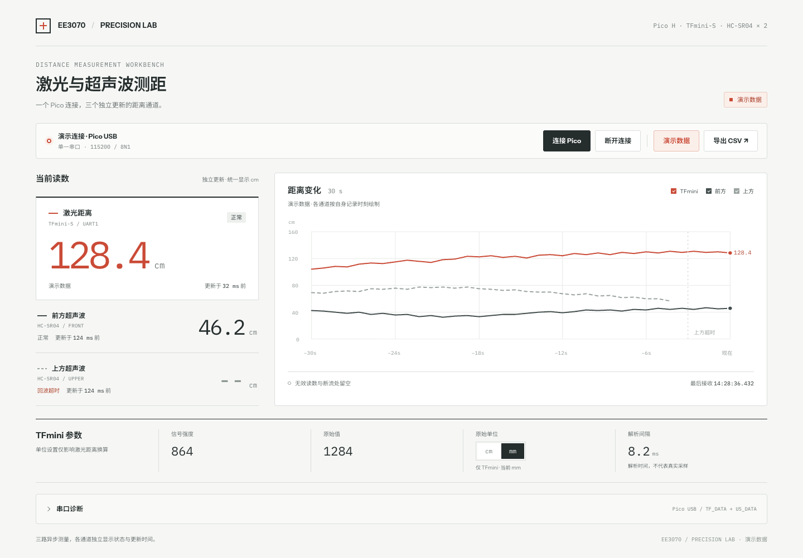
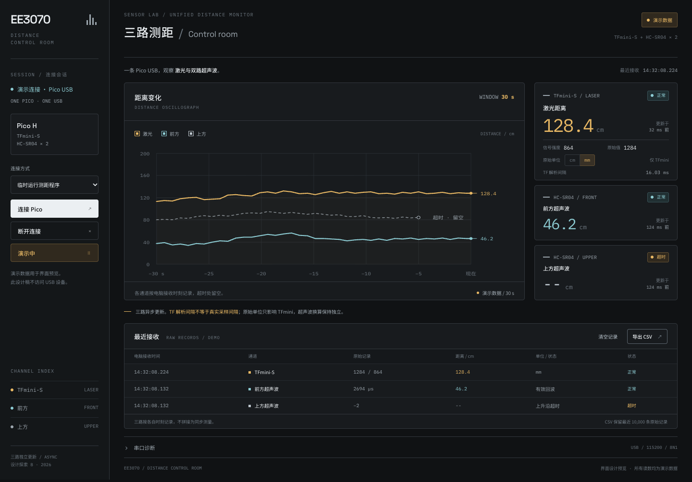
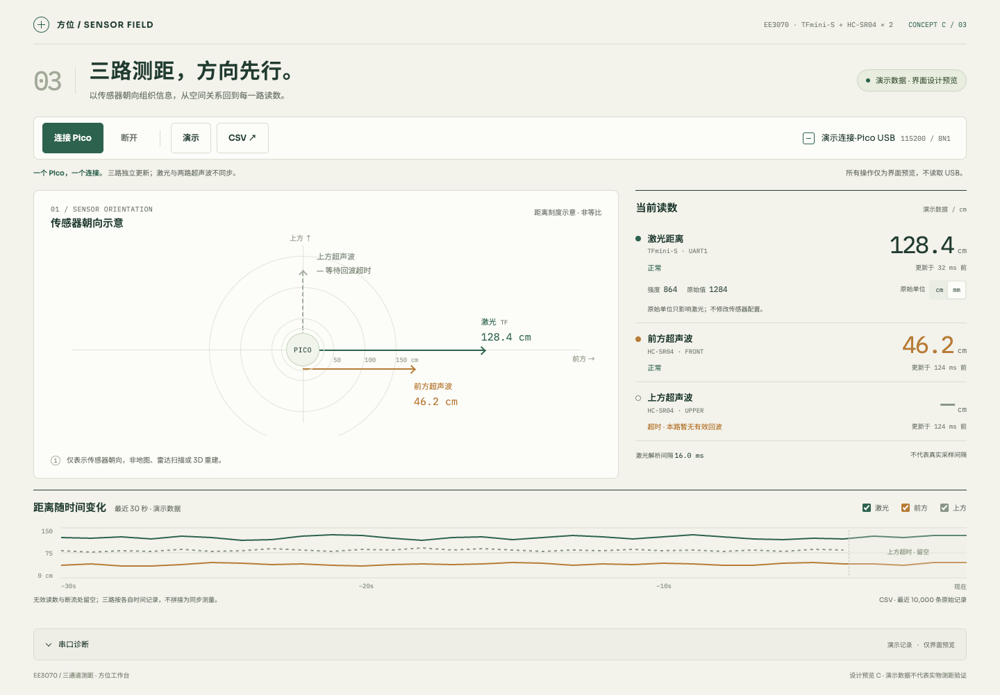

A / PRECISION LAB
精密实验仪器
主读数优先，横向通道行配大幅曲线。浅色、克制，便于日常核对数值。

TFmini-S 激光 + 两路 HC-SR04 · 全部为演示数据，仅用于选择界面方案。
主读数优先，横向通道行配大幅曲线。浅色、克制，便于日常核对数值。

曲线占据主工作区，侧栏控制、右侧遥测和记录表支持密集观察。

先看传感器朝向，再看独立读数。示意图不是地图、扫描或三维重建。
